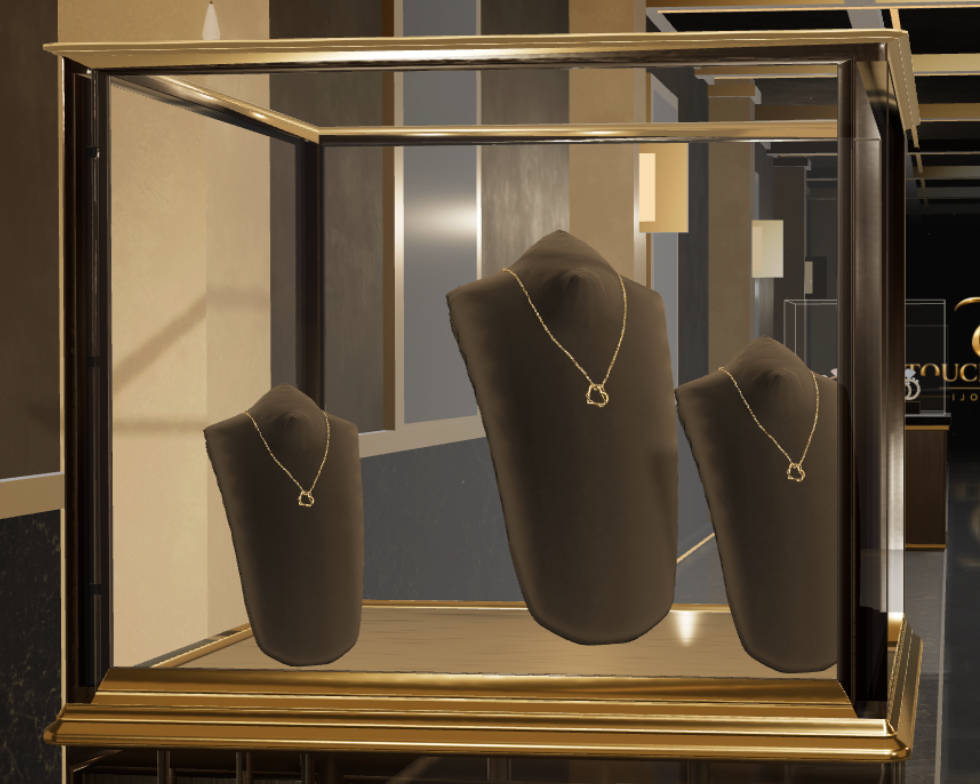
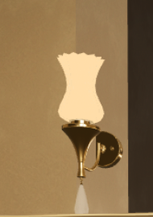
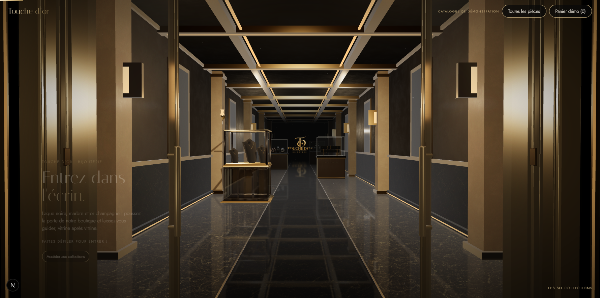

Maison noire — vitrine et applique pilotes
Vrais modèles téléchargés, adaptation locale. Le dessin classique du meuble reste à valider avant toute généralisation.
Avant à gauche · Après à droite — déplacer le curseur. Même caméra, 1780 × 883.
Vitrine : bois sombre, moulures champagne, vitrage clair et trois bustes. Même collier décliné à trois échelles.
Une applique intérieure : verre flûté opalin, bras, rosace et pampille.
Vue générale du couloir, portes ouvertes.Performance mesurée
SwiftShader logiciel, 22 images par mesure, premier arrêt. Ce relevé ne représente pas une carte graphique réelle.
| Mesure | Avant | Après |
|---|
| Temps moyen entre images (ms) | 565 | 734,2 |
| Temps CPU de soumission du rendu (ms) | 4,6 | 4,8 |
| Appels de dessin, reflet inclus | 418 | 415,9 |
| Triangles soumis, reflet inclus | 82 822 | 240 662 |
| Tampons géométriques CPU de la scène (octets) | 2 911 632 | 5 703 564 |
| Textures GPU | 48 | 52 |
35/35 contrôles navigateur passent. Caméra, portes, architecture et cinq autres vitrines conservées. Aucun déploiement.
Rapport et limites · Téléchargements et licences · Tests navigateur · Mobile
Pilote soumis à validation visuelle ; aucune généralisation aux autres vitrines.